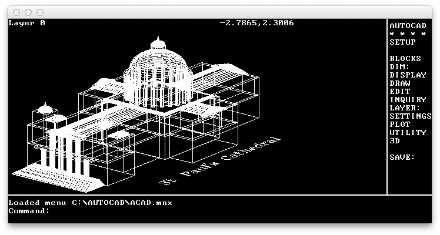
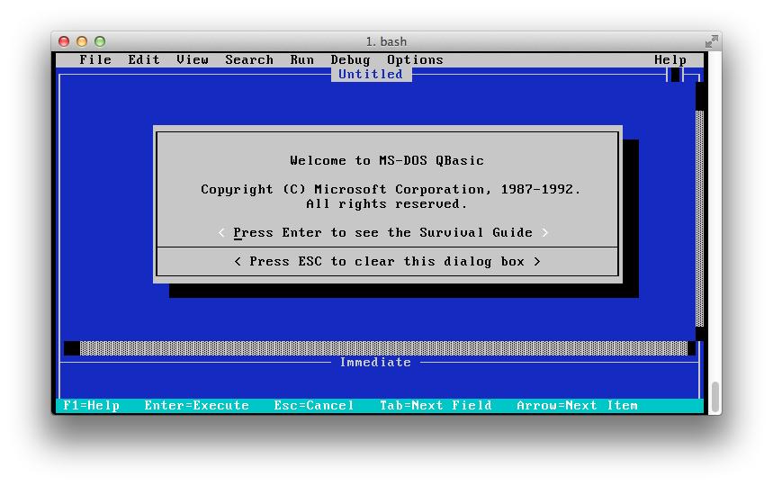

Author:
- Name: Adrian Cable
Location: US - United States of America (United States)
To build:
makeAn alternate version that should compile in Windows/MS Visual Studio is available. See the Alternate code section below.
To use:
./cable3 bios-image-file floppy-image-file [harddisk-image-file]Try:
./cable3.shNOTE: to quit the program type QUITEMU. You might have to be at the top level
directory of the drive, A: or C:.
To send an Alt+XXX key combination, press (^A / Ctrl+A) then the key, so
for example to type Alt+F, press (^A / Ctrl+A) then F.
To send an Fxx key, press ^F / Ctrl+F then a number key. For example, to
get the F4 key, press ^F / Ctrl+F then 4. To get F10, press ^F /
Ctrl+F then 0.
To send a Page Down key, press ^F / Ctrl+F then O (letter O, not digit
zero). To send a Page Up key, press ^F / Ctrl+F then E. Other key
combinations are left for the discovery of the user.
Alternate code:
An alternate version, which should compile in Windows, is provided.
Alternate build:
Assuming make is available and will function:
make altAlternate use:
Use cable3.alt as you would cable3 above.
Judges’ remarks:
This entry weighs in at a magical 4043 bytes (8086 nibbles, 28,301 bits). It manages to implement most of the hardware in a 1980’s era IBM-PC using a few hundred fewer bits than the total number of transistors used to implement the original 8086 CPU.
If you are using macOS, the included sc-ioccc.terminal configuration file will correctly display console applications that use ANSI graphics.
NOTE: the author remarked that in some systems one might need to #include <unistd.h>. This has been done in the entry but not the alternate version. This
should not affect the usability of the program but will trigger a warning which
we have disabled in the Makefile.
Update: This entry now has its own website: https://github.com/adriancable/8086tiny
Author’s remarks:
A tiny but highly functional PC emulator/virtual machine
The author hereby presents, for the delectation (?) of the judges, a portable PC emulator/VM written specifically for the IOCCC which runs DOS, Windows 3.0, Excel, MS Flight Simulator, AutoCAD, Lotus 1-2-3 …
In just 4043 bytes of C source, you get a complete mid-late 1980s-era IBM-compatible PC, consisting of:
- Intel 8086/186 CPU
- 1MB RAM
- 8072A 3.5” floppy disk controller (1.44MB/720KB)
- Fixed disk controller (supports a single hard drive up to 528MB)
- Hercules graphics card with 720x348 2-color graphics (64KB video RAM), and CGA 80x25 16-color text mode support
- 8253 programmable interval timer (PIT)
- 8259 programmable interrupt controller (PIC)
- 8042 keyboard controller with 83-key XT-style keyboard
- MC146818 real-time clock
- PC speaker
The emulator uses the SDL graphics library for portability, and compiles for Windows, macOS, Linux and probably most other 32-bit/64-bit systems too.
If you like living on the edge you can try building the emulator on a big endian machine, and you will get an emulation of a big endian 8086, a rather bizarre and somewhat useless beast. For everyone else, please run the emulator on a little endian machine.
RULE 2 ABUSE DISCLAIMER
- cable3.c is 4043 bytes in length (half an 8086).
iocccsize -i < cable3.creturns 1977 (the year the 4.77 MHz 8086 CPU was announced)- Therefore, any suspicions the judges may have regarding rule 2 non-compliance might be well-intentioned but are groundless.
- Nonetheless, the author would like to apologise to the judges for the one-big-block-of-code nature of this entry, which turned out to be unavoidable. Hopefully the joys of this entry will make up for its shortcomings.
Why is this entry obfuscated/interesting?
- First of all the 8086 is a nightmare processor to emulate. Instruction codings are complex and irregular in size and structure, with multiple addressing modes and no consistent memory placement for operands, very often multiple possible encodings for the same instruction, and the bizarre segment:offset memory model. In addition, the 8086 has a number of bugs (e.g. PUSH SP), undocumented behaviours and instructions (e.g. AAM/AAD + imm8, SALC, flag behaviour for MUL/DIV, etc. etc.), and archaic features (e.g. parity/auxiliary flags) which all need to be emulated properly. Here we emulate every feature of the CPU pretty exactly (in fact better than most commercial clones of the processor e.g. the NEC V30), with the exception of the trap flag which no real software uses except for debuggers (although support for the TF can be added if deemed important, without exceeding the IOCCC size limit).
- In addition to the CPU we also emulate all the standard PC peripheral hardware. Parts of it are somewhat complete, much is rather dysfunctional (like the 8253/8259) but enough to support most real software.
- Nonetheless the source, while large for the IOCCC, is rather tiny for a functional PC emulator - around 2% of the size of the source of other open-source 8086 PC emulators with comparable functionality.
- In fact, this entry is just like happy hour - at 4043 bytes long, you pay for half the 8086, but you get served the whole one.
- Getting the code down to <= 4096 characters to meet the IOCCC rule 2 overall
size limit required a good deal of effort (and appreciable risk of divorce),
with obfuscation being a pretty unavoidable consequence in most places … for
the rest, I use short circuit operators whenever possible, mix
x[y]andy[x], don’t use any flow control keywords except forfor, use K&R-style declarations to honor the C language’s rich cultural heritage (plus it saves a byte), and occasionally go overboard with nasty nested indexes to give things like this:--64[T=1[O=32[L=(X=*Y&7)&1,o=X/2&1,l]=0,t=(c=y)&7,a=c/8&7,Y]>>6,g=~-T?y:(n)y,d=BX=y,l]. - This entry highlights the importance of comments in C.
- This entry might result in an adjustment to the IOCCC size tool for the 2014 competition (see above).
Compiling on different platforms
This entry has been tested on Windows (compiled with MS Visual Studio 2010 and
2013), Mac OS X (clang and gcc), and Linux (clang and gcc). The Makefile
supplied is good for Mac OS X, Linux and probably other Unices. I have received
reports that the emulator works on Raspberry Pi/Android/ARM (you will need to
compile with -fsigned-char) and iOS. You will need to adjust the
Makefile if your system lacks sdl-config to correctly point to the
SDL libraries and header files.
On UNIX-based systems we can get raw keystrokes using stty. However Windows
has no stty. Therefore the Makefile includes a -D option to define a
“keyboard driver” KB which as it stands is suitable for Unices, but maybe not
non-UNIX platforms. For example, for Windows/MS Visual Studio, instead of the
Makefile definition of KB, use something slightly different - add the following
entry to the Preprocessor Definitions list in the Project Properties page:
KB=(kb=H(8),kbhit())&&(r[1190]=getch(),H(7))NOTE: this is done in the Alternate code.
POSIX portability note
The code as supplied uses implicit function declarations for POSIX file I/O and in doing so assumes that file offsets are the same bit width as your architecture. For some systems (e.g. 32-bit Mac OS X, which uses 64-bit file offsets) this is not the case, and to run successfully on these systems, you will need to explicitly declare these functions by adding the appropriate include to the top of the source:
#include <unistd.h>NOTE: this has been done in cable3.c.
Usage
./cable3 bios-image-file floppy-image-file [harddisk-image-file]PLEASE NOTE that under Unices the keyboard must be in raw mode for the emulator to work properly. Therefore the emulator is best run from a shell script that looks something like:
stty cbreak raw -echo min 0
./cable3 bios floppy.img harddisk.img
stty cooked echoSee the cable3.sh script.
To use the emulator - floppy mode only
The simplest use of the emulator is with a single floppy boot disk image, like
the fd.img provided, which is a FreeDOS boot disk.
Before running the emulator on a Unix-type system, stty needs to be used to
put the keyboard into raw mode (and afterwards it needs to be put back to
cooked). So, run the emulator using something like this script (provided as
the cable3.sh file):
stty cbreak raw -echo min 0
./cable3 bios fd.img
stty cooked echoTo use the emulator - floppy + HD mode
Easiest to start with is to try a ready-made 40MB hard disk image containing a
whole bunch of software which is in the included file hd.img.
For the more adventurous, you can start off with (for example) a blank 40MB image file called hd.img made using e.g. Makefile. Then use:
stty cbreak raw -echo min 0
./cable3 bios fd.img hd.img
stty cooked echoPreparing the hard disk for use in the emulator is done just like a real PC.
Boot the emulator, and use FDISK to partition the hard disk. When it’s done
FDISK will reboot the emulator. Then you can use FORMAT C: and you are done. The
resulting disk image is in the right format to be mounted on a real Windows PC
using e.g. OSFMount (Windows), hdiutil (macOS), or mount (linux/unix), providing
an easy way to copy files and programs to and from the disk image. Or, you can
install programs from regular floppy disk images (see Floppy disk
support below).
Keyboard emulation
The emulator emulates an XT-style keyboard controlled by an Intel 8042 chip on
I/O port 0x60, generating IRQ1 and then interrupt 9 on each key press. This is
harder than it sounds because a real 8042 returns scan codes rather than the
ASCII characters which the C standard I/O functions return. Rather than make the
emulator less portable and use ioctl(2) or platform-dependent equivalents to obtain
real scan codes from the keyboard, the emulator BIOS does the reverse of a real
PC BIOS and converts ASCII characters to scan codes, simulating depress/release of
the modifier keys (e.g. shift) as necessary to work like a “real” keyboard. The
OS (DOS/Windows) then converts them back to ASCII characters and although this
process normally works seamlessly don’t be surprised if there are issues, for
example, with non-QWERTY e.g. international keyboards.
Most of the time you can just type normally, but there are special sequences to
get Alt+xxx and Fxxx.
To send an Alt+XXX key combination, press (^A / Ctrl+A) then the key, so
for example to type Alt+F, press (^A / Ctrl+A) then F.
To send an Fxx key, press ^F / Ctrl+F then a number key. For example, to
get the F4 key, press ^F / Ctrl+F then 4. To get F10, press ^F /
Ctrl+F then 0.
To send a Page Down key, press ^F / Ctrl+F then O (letter O, not digit
zero). To send a Page Up key, press ^F / Ctrl+F then E. Other key
combinations are left for the discovery of the user.
Text mode support
The emulator supports both text output via the standard BIOS interrupt 0x10
interface, and also direct video memory access (one page, 4KB video RAM at
segment B800) in 80x25 CGA 16-color text mode.
BIOS text output calls are converted to simple writes to stdout. Direct video
memory accesses for the 80x25 CGA color text mode are converted to ANSI
terminal escape sequences. If you are using a terminal which does not support
ANSI (e.g. you are compiling the emulator with MS VC++ and running in a
Windows console window) then PC applications that directly write to video memory
in text mode might be unusable.
Most CGA I/O ports are not supported except for the CGA refresh register at
0x3DA, which some applications use for timing or synchronisation.
The regular PC character code page (437) includes various extended ASCII
characters for things like line drawing. You might want to set the font in your
terminal program to something that includes these (e.g. on Mac OS X there is a
freeware font called Perfect DOS VGA
437 which does the trick).
Occasionally a DOS application on exit will leave the video hardware in an odd
state which confuses the emulator, resulting in subsequent text output being
invisible. If this happens, just use the DOS CLS command to clear the screen
and all will be well again.
Graphics mode support
Hercules 720x348 monochrome graphics
mode emulation is
implemented using SDL. Most Hercules features are supported via the normal I/O
interface on ports 0x3B8 and 0x3BA including video memory bank switching
(segments B000/B800), which some games use for double-buffered graphics. CGA
graphics modes are not supported.
When an application enters graphics mode, the emulator will open an SDL window (which will be closed when the application goes back to text mode). Including code to redirect keystrokes from the SDL window to the main terminal window would have busted the IOCCC size limits, so you need to keep the main emulator terminal window in focus at all times even when you are doing graphics (sounds a little odd but you will get used to it).
On Unices, SDL will automatically output graphics via X11 if the DISPLAY environment variable is set up.
Dual graphics card support
Some applications (e.g. AutoCAD) support a PC configuration with a CGA card and a Hercules card, for simultaneous text and graphics output on different displays. The emulator simulates this configuration, too, using separate windows for the (terminal) text and (SDL) graphics displays.
BIOS
Like a real PC, the emulator needs a BIOS to do anything useful. Here we use a custom BIOS, written from scratch specifically for the emulator. Source code for the BIOS (written in 8086 assembly language) which compiles with the freely-available NASM x86 assembler is in bios.asm.
The BIOS implements the standard interrupt interfaces for video, disk, timer, clock and so on, much as a “real” PC BIOS does, and also a small timer-controlled video driver to convert video memory formatting into ANSI escape sequences when the emulator is in text mode.
CPU and memory emulation
Memory map is largely as per a real PC, with interrupt vector table at 0:0,
BIOS data area including keyboard buffer at 40:0, CGA text video memory at
B800:0, Hercules dual-bank graphics memory at B000/B800:0, and BIOS at
F000:100. Unlike a real PC, in the emulator the CPU registers are
memory-mapped (at F000:0), which enables considerable optimisation of the
emulator’s instruction execution unit by permitting the unification of memory
and register operations, while remaining invisible to the running software.
The CPU supports the full 8086/186 instruction set. Due to the complexities of the 8086’s arbitrary-length instruction decoding and flags, 8086 instructions are first converted to a simpler intermediate format before being executed. This conversion, along with instruction lengths and how each instruction modifies the flags, is assisted by some lookup tables which form part of the BIOS binary.
The CPU also implements some “special” two-byte opcodes to help the emulator talk with the outside world. These are:
0F 00- output character in registerALto terminal.0F 01- write real-time clock data (as returned bylocaltime()) to memory locationES:BX.0F 02- readAXbytes from disk at offset512*(16*SI+BP)into memory locationES:BX. Disk is specified inDL(0= hard disk,1= floppy disk).0F 03- writeAXbytes at memory locationES:BXto disk at offset512*(16*SI+BP). Disk is specified inDLas per0F 02.
Emulator exit is triggered if CS:IP == 0:0 (which would be nonsensical in real
software since this is where the interrupt vector table lives). The supplied
fd.img disk includes a small program QUITEMU.COM which contains a single
JMP 0:0 instruction, to allow the user to easily quit the emulator without
shutting down the terminal.
Floppy disk support
Emulates a 3.5” high-density floppy drive. Can read, write and format 1.44MB disks (18 sectors per track, 2 heads) and 720KB disks (9 sectors per track, 2 heads).
If you want to install your own software from floppy images (downloaded from e.g., vetusware.com at one time), the easiest way to “change disks” is to copy each disk image in turn over the floppy image file you specify on the command line. Don’t forget to put your original boot disk back at the end!
Hard disk support
Supports up to 1023 cylinders, 63 sectors per track, 63 heads for disks up to 528MB.
Disk image format used is a subset of the standard “raw” format used by most disk image mount tools. In general, disk images prepared by the emulator will work with disk image tools and other emulators, but not the other way around.
The emulator uses a particularly dumb algorithm to derive a simulated
cylinder/sector/head geometry from the disk image file’s size. This algorithm
often results in not all the space in the image file being available for disk
partitions. For example, creating a 40,000,000 byte image file results in DOS FDISK seeing only 31.9MB as the volume size.
Note that unlike a real PC, the emulator cannot boot from a hard disk (image). Therefore, you will always need to use a bootable floppy image, even if after boot everything runs from the HD.
Mouse
No mouse is emulated.
Real-time clock
Reading the RTC (both time and date) is emulated via the standard BIOS clock interface, pulling the time/date from the host computer. Setting the time or date is not supported.
Timers
A countdown timer on I/O port 0x40 is simulated in a broken way which is good
enough for most software. On a real PC this has a default period of 55ms and is
programmable. No programmability is supported in the emulator and the period may
be about right or completely wrong depending on the actual speed of your
computer.
On a real PC, IRQ 0 and interrupt 8 are fired every 55ms. The emulator tries to do the same but again, the delay period is not calibrated so you get what you get.
PC speaker
Beeps only, through the console.
Software supported
The emulator will run practically any software a real PC (of the spec listed at the top of this file) can. The author has tested a number of OSes/GUIs (MS-DOS 6.22, FreeDOS 0.82pl3, Windows 3.0, DESQview 2.8), professional software (Lotus 1-2-3 2.4 and AsEasyAs 5.7 for DOS, Excel 2.1 for Windows, AutoCAD 2.5, WordStar 4), programming languages (QBASIC, GWBASIC, Turbo C++), games (Carrier Command, Police Quest, and a bunch of freeware Windows games), and diagnostic/benchmark software (Manifest, Microsoft MSD, InfoSpot, CheckIt) and all of them run well.
Screenshots of some of these applications running (on Mac OS X) are provided for the impatient:





Compiler warnings
A lot of compiler warnings are produced by clang. Missing type specifiers, control reaching the end of functions without returning values, incompatible pointer type assignments, and some precedence warnings, all necessary to keep the source size down. Other compilers are likely to produce similar warnings.
Inventory for 2013/cable3
Primary files
- cable3.c - entry source code
- Makefile - entry Makefile
- cable3.alt.c - alternate source code
- cable3.orig.c - original source code
- cable3.sh - script to run entry
- screenshot_autocad.png - screenshot of AUTOCAD running on macOS
- screenshot_flightsim4.png - screenshot of Flight Sim 4 running on macOS
- screenshot_lotus123.png - screenshot of Lotus123 running on macOS
- screenshot_qbasic.png - screenshot of QBasic running on macOS
- screenshot_simcity.png - screenshot of SimCity running on macOS
- screenshot_win3.png - screenshot of Win3 running on macOS
- sc-ioccc.terminal - config for macOS to correctly display ANSI graphics apps
- bios.asm - BIOS source in assembly
Secondary files
- 2013_cable3.tar.bz2 - download entry tarball
- README.md - markdown source for this web page
- bios - custom BIOS
- .entry.json - entry summary and manifest in JSON
- fd.img - FreeDOS boot disk
- .gitignore - list of files that should not be committed under git
- hd.img - disk image
- .path - directory path from top level directory
- index.html - this web page


{kind=link}
{kind=link}
{kind=link}